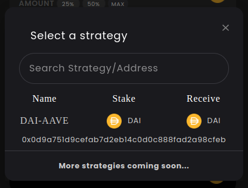

Flashburn
If you hold fTokens (like fDAI), you can burn them for yield at anytime. Indeed, holding fTokens make you entitled to a portion of the yield pool of a certain strategy. The more fTokens you burn, the bigger portion of the yield pool you shall receive in your wallet.
And that’s exactly what the Flashburn allows you to do! You just need to follow these steps:
- Select a strategy
- Select the amount to burn
- `Change the slippage tolerance`_
- `Approve fToken`_
- Flashburn
Select a strategy
Note
Each strategy has its own yield pool and principal token. Therefore, depending on which fToken you wish to burn, and how much yield you’d like to retrieve, you should select the right strategy.
To select a strategy, simply click the strategy dropdown, which opens a modal listing all the available strategies. You can search them by name or address using the search bar.
